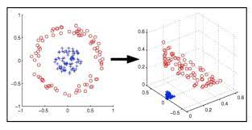

SVM is a really popular and also the most widely used supervised machine learning algorithms! Support Vector Machines takes on a classification approach, and is known for handling multiple continuous and categorical variables. This model is built on a multidimensional space which helps separate different classes.
from sklearn import svm

Goal of the Model
The objective of a SVM is to segregate a data set into a hyperplane, with the highest margin. The support vector allows the model to classify data sets into separate classes. The higher the margin we have, the more accurate our model is, and vice versa.
How To Deal with Non-Linear and Inseparable Planes
As seen below, not all data sets can be represented using a linear hyperplane. To overcome this challenge, SVM uses kernal manipulation to transform the input space to a higher dimensional space. Instead of data points being plotted in a x and y-axis, we will now be plotting the points in the x-axis and the z-axis. The z-axis is simply the squared sum of x and y (which can be represented with the following equation of y: z=x^2=y^2). Using these two axis, we will then be able to go back and segregate the points using linear separation.
Testing the Model/Results
After training our model we checked the accuracy of our model by using metrics.accuracy_score from sklearn and we got an accuracy of 99.97%. To visualize the performance of our classification algorithm we made a confusion matrix, shown below. Hyper-parameter tunings were not needed for better performance of the model as the model was receiving the same accuracy score as with/without the parameters. From our confusion matrix, we found out that from the predictions, 23,962 predictions were TN, 3 as FP, 4 as FN, and 30 were TP. The classification report also reflects our high accuracy score.
metrics.accuracy_score=0.994825
Confusion Matrix